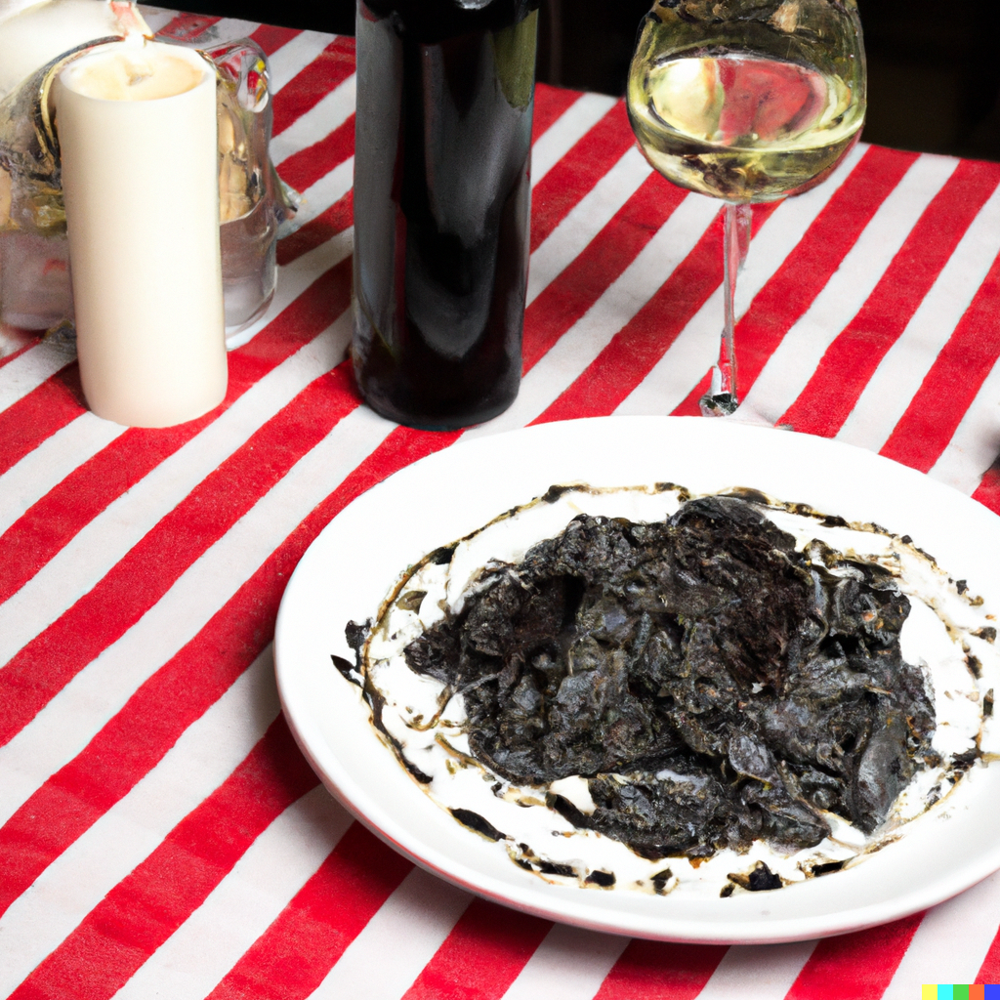

Squid Ink Pasta with White Chocolate Sauce

Description
This dish pairs the briny richness of squid ink pasta with the
sweet creaminess of white chocolate sauce, creating a unique
balance of savory and sweet flavors that tantalize the palate.
Ingredients
- 8 oz squid ink spaghetti or linguine
- 1/4 cup unsalted butter
- 2 cloves garlic, minced
- 1 cup heavy cream
- 1/2 cup grated Parmesan cheese
- 2 oz white chocolate, finely chopped
- Salt and pepper to taste
- Fresh parsley, chopped, for garnish
Steps
- Cook the squid ink pasta according to the package
instructions until al dente. Drain and set aside,
reserving about 1/2 cup of pasta water.
- In a large skillet, melt the unsalted butter over
medium heat. Add the minced garlic and sauté until
fragrant, about 1 minute.
- Pour in the heavy cream and bring it to a simmer.
Cook for 2-3 minutes, stirring occasionally, until
slightly thickened.
- Reduce the heat to low and gradually add the grated
Parmesan cheese, stirring constantly until melted and
smooth.
- Add the chopped white chocolate to the sauce, stirring
until it melts completely and the sauce is creamy and
well combined.
- If the sauce is too thick, gradually stir in some of the
reserved pasta water until you reach your desired
consistency.
-
Season the sauce with salt and pepper to taste, adjusting
as needed.
- Add the cooked squid ink pasta to the skillet with the
white chocolate sauce, tossing gently to coat the pasta
evenly.
- Cook for an additional 1-2 minutes, allowing the pasta to
absorb some of the sauce and heat through.
- Remove the skillet from the heat and transfer the squid
ink pasta with white chocolate sauce to serving plates.
- Garnish with chopped fresh parsley for a pop of color and
flavor.
- Serve immediately and enjoy this unique and indulgent twist
on pasta with an unexpected sweet-savory combination. Buon
Appetito!